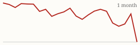
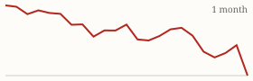

| Today's briefing for operators |
Top line: Housing shortage over in South and West |
|
| Friday, November 6, 2026 | Late Edition | Curated from 64 voices on X |
|
Real Estate
The Housing Shortage Is Officially Over in the South and West
Nick Gerli says listings across the South and West are now 15% above their pre-pandemic norm, tipping states like FL, TX, TN, NV, AZ, CO and WA into a housing surplus.
By @nickgerli1 |
Listings versus pre-pandemic norm chart. Image via @nickgerli1 on X | Nick Gerli calls it: the U.S. housing shortage is over. Listings in the South and West now run 15% above pre-pandemic levels, and with sales down roughly 30%, those markets are entering a surplus. |
For operators, more inventory and fewer buyers mean sellers with less leverage and longer days on market. Buy with wider margins, underwrite slower exits, and lean on cash and creative offers where retail demand is thin. |
|
| Read on X |
|
Mortgage Rates & Markets | Mortgage Rates Today's average lender rates | 30-year fixed | 7.17% | -0.05 | | 15-year fixed | 6.80% | -0.05 |
Daily change vs. prior day. Source: Mortgage News Daily, as of 11/5/2026 (updated weekdays about 4 PM ET). |
|
S&P 500 Close of Thu, Nov 5 S&P 500 7,353.73 ▼ -334.89 (-4.36%)  Yahoo Finance chart data (daily closes) |
|
Nasdaq Composite Close of Thu, Nov 5 Nasdaq Composite 24,315.00 ▼ -1,421.51 (-5.52%)  Yahoo Finance chart data (daily closes) |
|
| Real Estate & Deals | Cole's Blueprint for a $500K-Net RE Business in 2027 By @coleruudjohnson Cole Ruud-Johnson lays out the ideal 2027 real estate business, starting with AI agents that pull county leads daily, manage pipeline and follow-ups, and handle KPIs. Worth reading as a checklist against your own stack. Read on X |
The Seller Math Script That Gets Cash Offers Accepted By @NickMaccini Nick Maccini's seller pitch: list as-is and pay about 9% in closing costs, or take 70 cents on the dollar cash with costs covered. Framing the real net difference makes the cash offer feel smaller than it sounds. He adds that sellers know the market is bad. Read on X |
Check the Second MLS You've Been Ignoring By @Jacob_Naviaux Jacob Naviaux used one MLS for 11 years and finally added the second one used by smaller brokerages on the south side of town. If your market has two, you may be missing comps and deals. Read on X |
Operations Create Value at Scale By @loganjrankin Logan Rankin says people underestimate value created by operating an asset better. Execution, not just buying right, is where scale pays off. Read on X |
| AI Briefing | Claude Personal Finance announcement. Image via @claudeai on X Claude Launches Personal Finance (Beta, US) By @claudeai Claude can now connect read-only to accounts you choose and answer money questions from your own balances and transactions. It can't move or invest money. Read on X |
GPT-6 Cyber announcement. Image via @OpenAI on X OpenAI Introduces GPT-6 Cyber By @OpenAI OpenAI's new security model powered this week's Linux kernel research, and teams at Mozilla and Palo Alto Networks are already using it. Read on X |
Perplexity teammates announcement. Image via @perplexity_ai on X Perplexity Launches AI Teammates By @perplexity_ai Perplexity's teammates take on jobs proactively using tasks, skills, memory and tools, collaborate with each other, and can message coworkers in Slack. Max subscribers on web now. Read on X |
Gemini Omni 1.2 Flash announcement. Image via @GoogleAI on X Gemini Omni 1.2 Flash: Cheaper, Longer Video By @GoogleAI Google's updated video model is more cost-effective, extends generation and editing to 15 seconds, and cuts glitches like jump cuts. Read on X |
GPT-6.2 Looks Imminent Today By @kimmonismus Leakers expect OpenAI's GPT-6.2 to drop today after it slipped past Thursday. Read on X |
Build Your First Business at 50 or 60 By @PeterDiamandis Peter Diamandis argues 30 years in an industry means you know problems young founders haven't hit yet. Experience is an underrated startup advantage. Read on X |
AI Adoption Won't Slow With a Stock Dip By @emollick Ethan Mollick says a downturn in AI stocks won't change the trajectory: companies aren't slowing adoption and development isn't slowing. Read on X |
| Business & Leadership | Red Flags Are Always Small By @LeilaHormozi Leila Hormozi: you keep getting burned because you see the red flag and talk yourself out of it. If it were big it wouldn't be a flag. Apply it to hires, partners and sellers alike. Read on X |
Seven Figures on 40-50 Hour Weeks By @Jacob_Naviaux Jacob Naviaux has made seven figures working 40-50 hours a week without weekends. Hustle seasons are fine, but they shouldn't be the permanent operating model. Read on X |
How Greg Isenberg Runs Grok Bot as Chief of Staff By @gregisenberg Greg Isenberg shows his setup: specialized agent jobs, more routines, and a chief-of-staff agent coordinating the rest. A practical model for delegating to AI like a team. Read on X |
|
The Hyre Times is compiled each morning by Groky from public posts on X plus public rate and market data. Summaries reflect the authors' own claims and have not been independently verified. Not financial advice. © 2026 Hyre Times. |
|